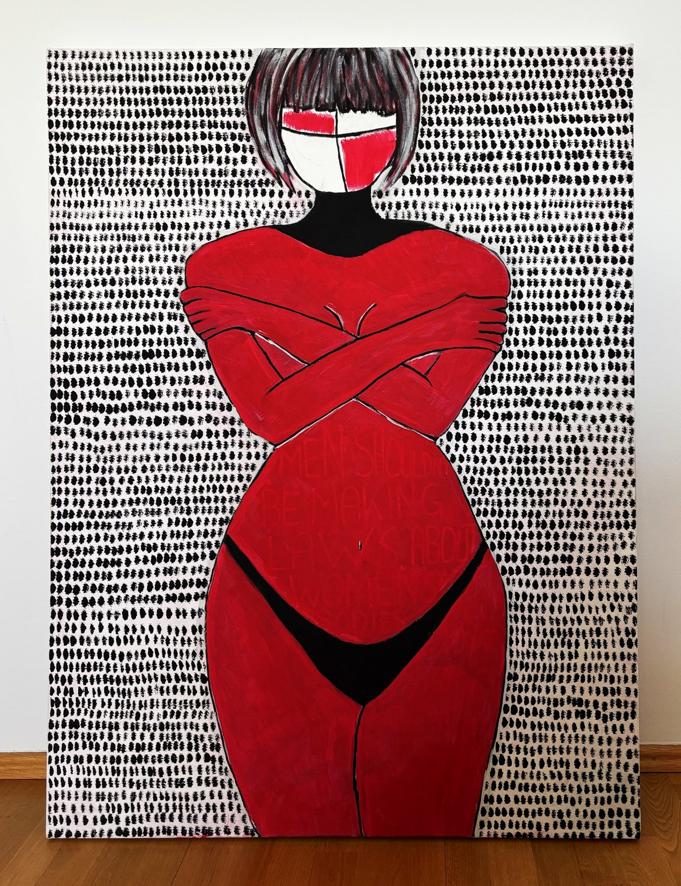
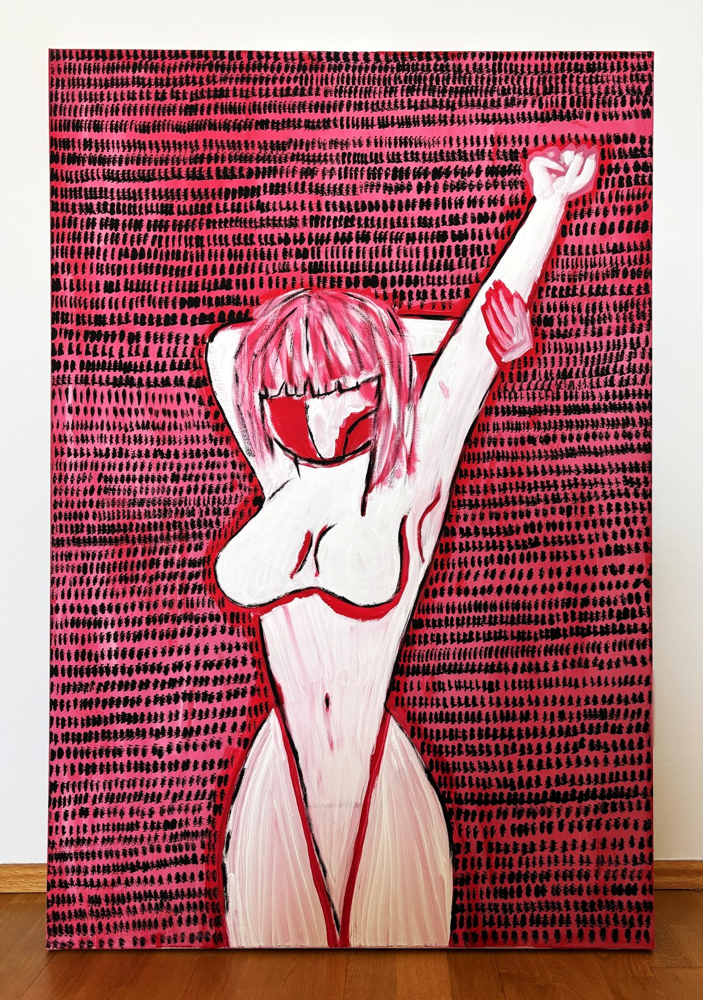
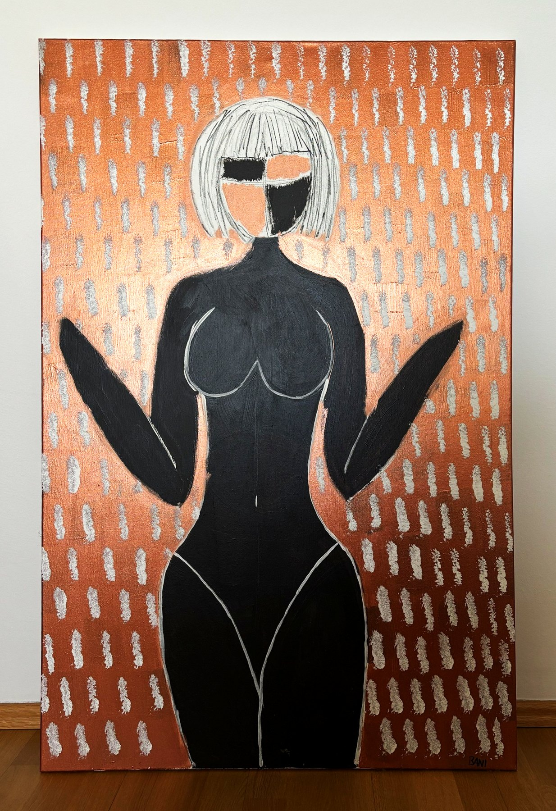
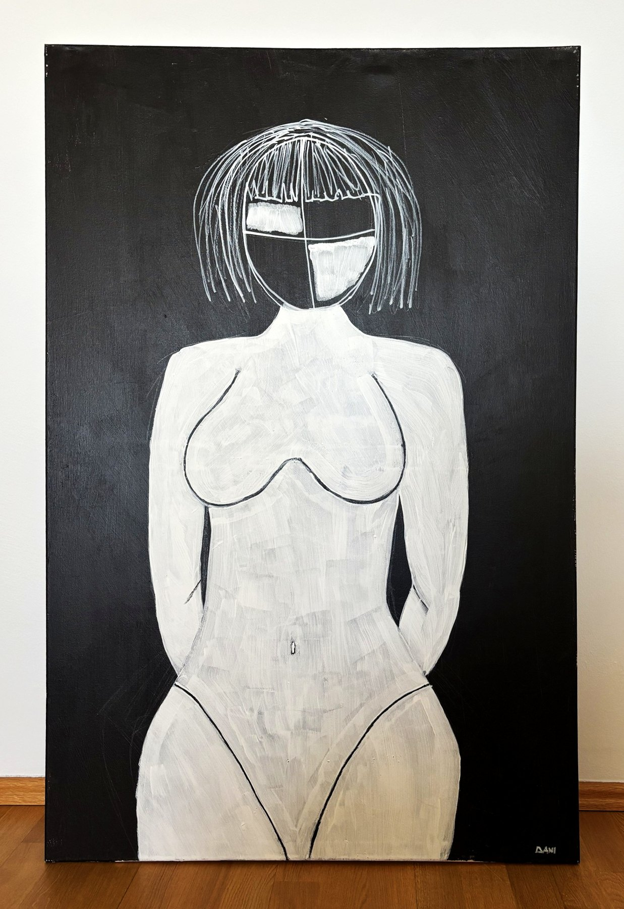
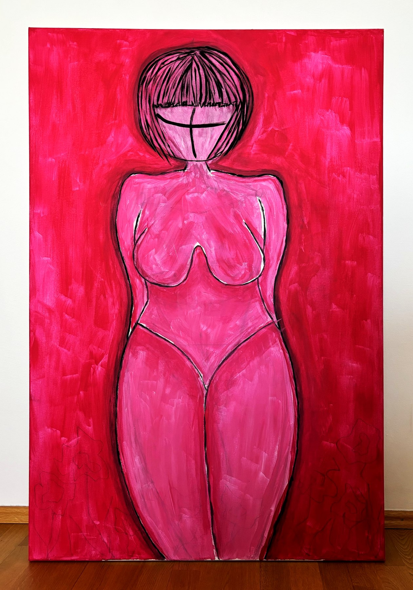
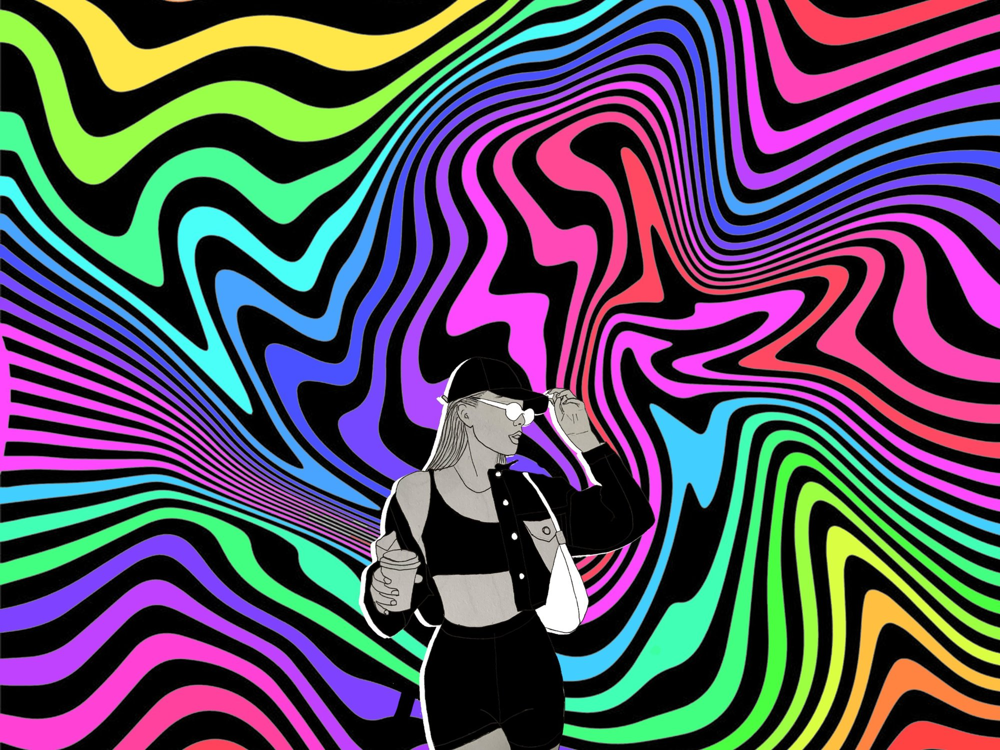
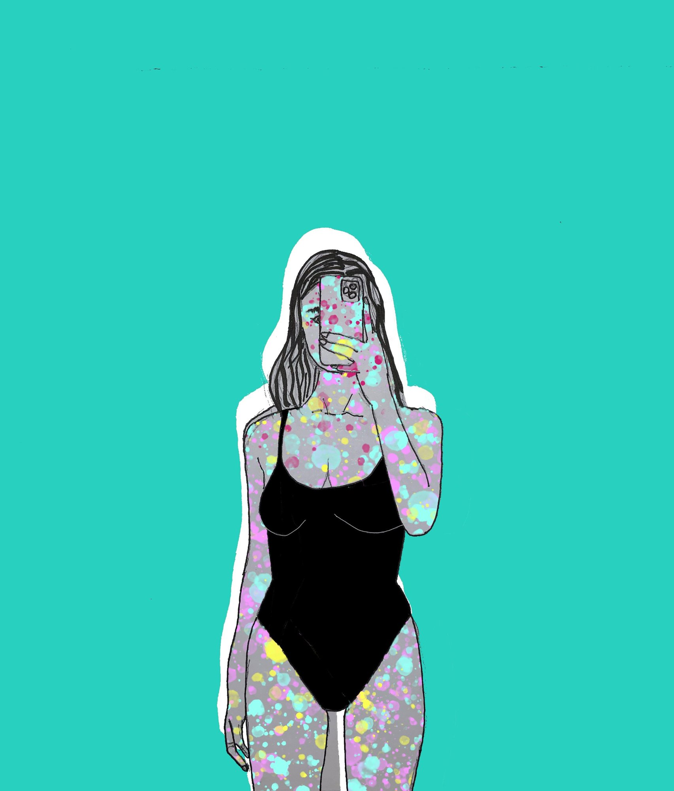
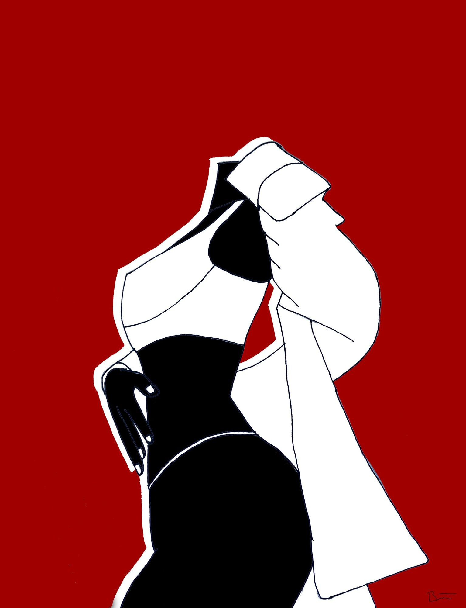
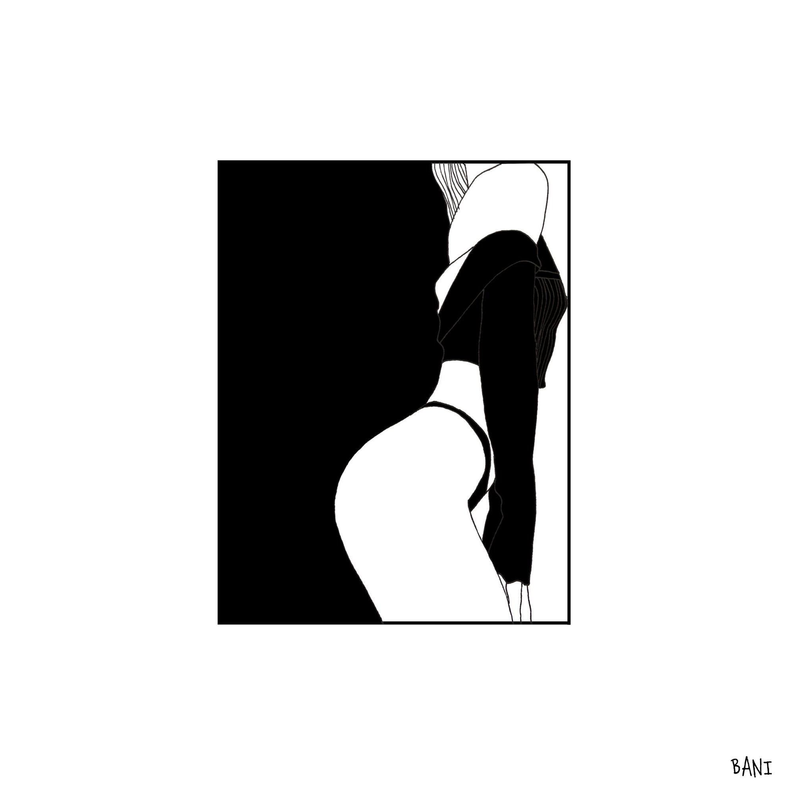
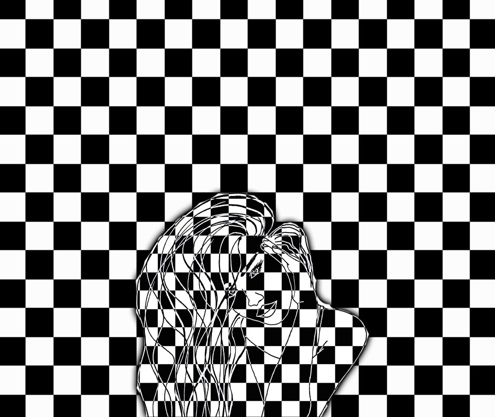

Malerei
Acryl auf Leinwand. Figuren ohne Gesicht – und die Frage, wohin der Blick dann wandert.






Digital
Zuerst mit der Hand auf Papier gezeichnet, dann eingescannt und am PC weiterbearbeitet. Figuren im Lärm des Feeds – angeschaut, gescrollt, selten gesehen.










Film
Die Woche, die nicht passiert ist
Kurzfilm. Eine Woche krank zu Hause. Aufstehen, Tee, PC, Handy, wieder hinlegen – jeden Tag dasselbe und jeden Tag ein bisschen weniger. Bis der Wecker läutet und sich nichts mehr bewegt. Bis der Tee einfach stehen bleibt.
Special Edition
Handgemachte Hoodies in limitierten Drops. Blanks, selbst aufgenähte Patches und eigene Prints – jedes Stück ein Einzelstück. Edition I: sechs Stück, an einem Abend ausverkauft.
About
Bani Benassi ist Bernd Waldhart – Filmemacher und Künstler aus Wien.
Alles, was er macht, hat er sich selbst beigebracht: Malerei, digitale Zeichnung, Film, Musik und Textildruck. Studiert hat er nichts davon.
Er wartet auf eine Nierentransplantation. Die Stunden an der Dialyse haben ihm gezeigt, wie wichtig es ist, Zeit mit dem zu füllen, was einen glücklich macht.
Seine Figuren haben kein Gesicht. Was bleibt, ist ein Körper, und so werden Frauen oft wahrgenommen: angeschaut, aber nicht gesehen. Seine Bilder machen diesen Blick sichtbar und halten ihn den Betrachtenden vor. Er malt aus der Perspektive eines Mannes. Für Frauen zu sprechen steht ihm nicht zu, denn wie sich dieser Blick anfühlt, wird er nie selbst erleben. Was er aber tun kann, ist hinschauen, sich an ihre Seite stellen und für ihre Rechte einstehen.